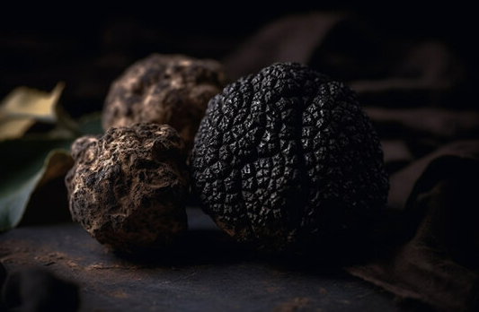

Bijoussa emme tyydy tavalliseen makuelämykseen. Uskomme, että herkullinen ruoka on taidetta, joka vaatii taitoa, intohimoa ja luovuutta. Siksi keittiössämme työskentelevät kokit, joilla on taiteilija sieluissaan. He käyttävät parhaita mahdollisia paikallisia raaka-aineita ja luo annoksia, jotka ovat sekä visuaalisesti lumoavia että herkullisia.

Bijou on tunnettu ainutlaatuisista drinkeistään. Haluamme antaa poikkeukselliset elämykset jotka alkavat ainutlaatuisista makuyhdistelmistä ja laadukkaista ainesosista. Siksi baarimikkomme loihtivat taidokkaasti cocktaileja, jotka yllättävät ja ilahduttavat sinua.

Bijoussa käytämme vain ja ainoastaan laatua. Uskomme, että herkulliset annokset alkavat ainutlaatuisista raaka-aineista. Siksi etsimme jatkuvasti parhaita mahdollisia makuja ja tuoreempia ainesosia paikallisilta tuottajilta.
Bijoussa jokainen luku on kirjoitettu tuoreista ja laadukkaista raaka-aineista. Tarinamme vaihtuu sesongin mukaan, ja jokainen annos on kuin pieni matka maailman sydämmeen. Nauti klassikoista ranskalaisesta keittiöstä modernilla twistillä tai anna meidä yllättää sinut innovatiivisilla makuyhdistelmillämme.
Juomalistamme on yhtä vaikuttava kuin ruokalistanikin. Löydät sieltä laajan valikoiman drinkkejä, jotka sopivat täydellisesti yhteen herkullisten annosten kanssa. Huippuluokan viinit eri puolilta maailmaa vievät sinut gastronomian kierrokselle. Jos kaipaat jotain alkoholitonta, tarjoamme laajan valikoiman virvokkeita ja alkoholittomia drinkkejä.
Huoneemme ovat kuin yksityisiä keitaita sataman vilinässä. Tunnelma on lämmin ja kutsuva, ja jokainen yksityiskohta on harkittu tarkasti. Bijou on täydellinen valinta juhliin tai kokouksiin. Bijou on enemmän kuin pelkkä ravintola. Se on elämys, joka herättää kaikki aistisi ja vie sinut unohtumattomalle matkalle makujen ja ylellisyyden maailmaan.Olet tervetullut Bijouun kokemaan ainutlaatuisen elämyksen. Tarinamme odottaa sinua.